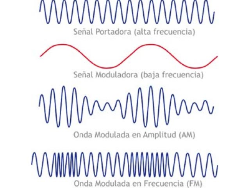

Onda Modulada
Una onda modulada es un tipo de onda en la que una de sus características, como la amplitud, la frecuencia o la fase, se varía en el tiempo por una señal llamada señal moduladora. Esta variación transporta la información que se está transmitiendo. La onda modulada se transmite a través de un medio, como el aire o el espacio, a un receptor. El receptor demodula la onda para recuperar la señal moduladora original.
